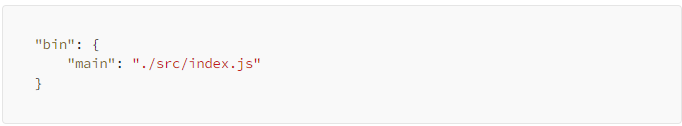
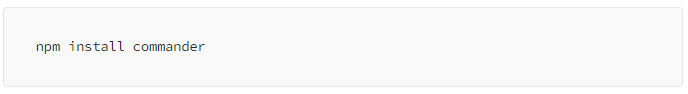
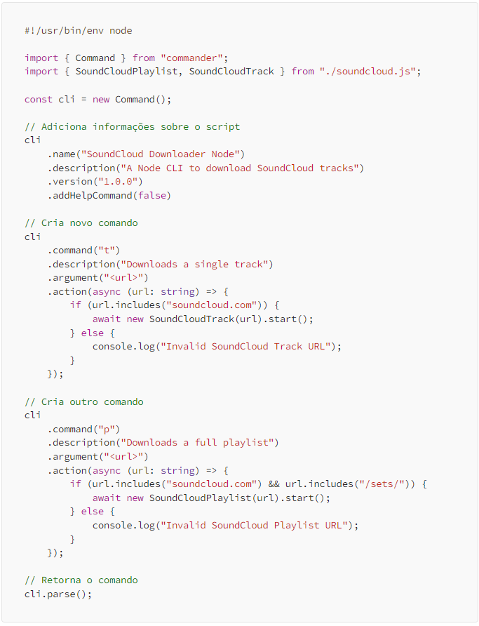
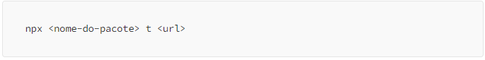
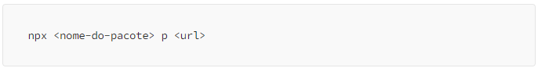

NPX é um executor de pacotes NPM, que permite a execução do mesmo sem a necessidade de criar um novo projeto.
Com isso usuários podem livremente utilizar nosso script para baixar sem necessidade de gerar um novo projeto, entretanto o mesmo deve ter instalado o NodeJS.
Antes de tudo precisamos configurar nosso package.json para executar o arquivo index.js quando o NPX for chamado.

Antes de construir nosso script vamos instalar o commander para simplificar a criação.

Agora vamos completar nosso index.ts.

Acima temos o nosso script inicial que chama os métodos de nossas classes, assim podemos chamar nosso script usando o seguinte código no terminal.

Ou assim se caso quisermos baixar uma playlist.

E assim terminamos nosso projeto de web scraping com NodeJS e Typescript.